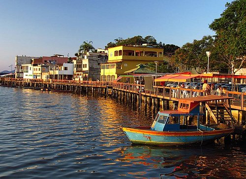
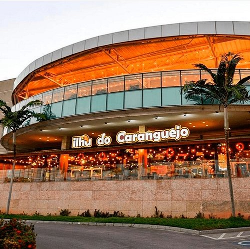
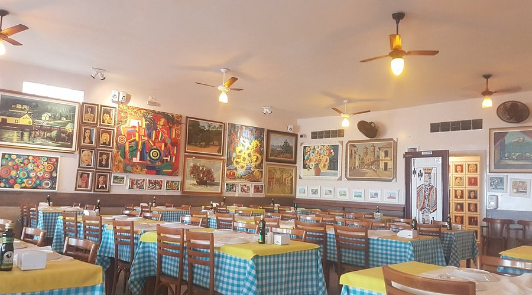
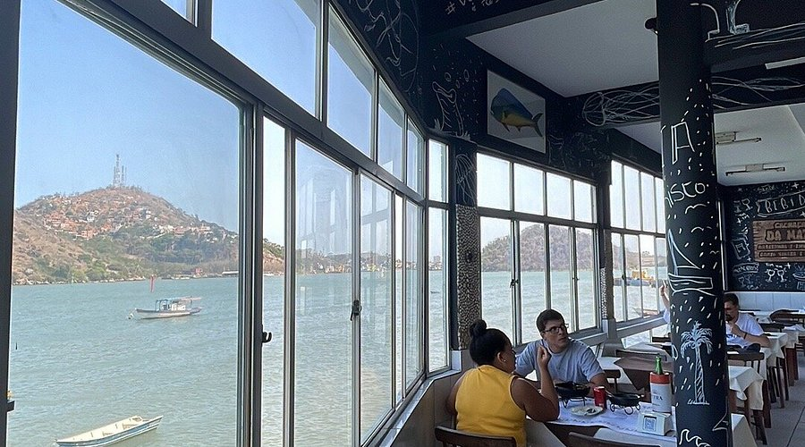
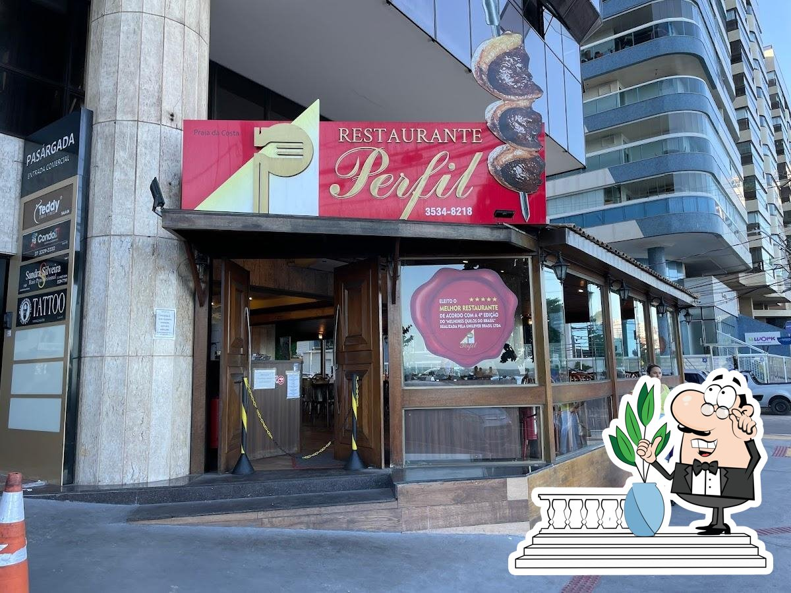
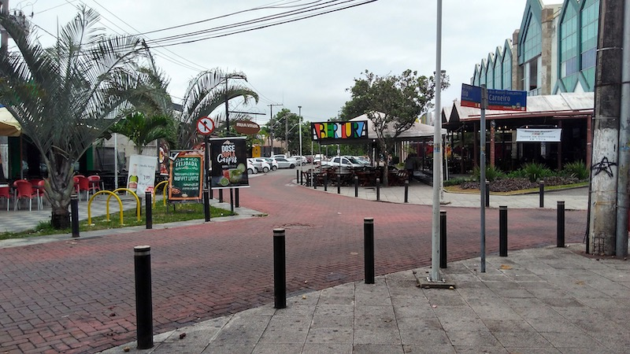

Tradicional polo gastronômico famoso pela autêntica moqueca capixaba.

Especialidade em caranguejo e frutos do mar.

Vista incrível da Praia da Costa com pratos sofisticados.

Tradicional restaurante de frutos do mar na Praia da Costa.

Ambiente moderno na Praia da Costa com excelente gastronomia.

Região mais movimentada de Vitória com bares e restaurantes variados.